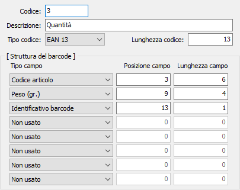

Tipi barcode
La tabella consente di creare delle tipologie di codice a barre contenenti una serie di dati.

CODICE: codice numerico per identificare il tipo di codice a barre in esame. Sul campo sono attive le funzioni di ricerca (F9) sulla tabella stessa.
DESCRIZIONE: campo alfanumerico di 50 caratteri per descrivere il codice a barre.
TIPO CODICE: identifica il tipo di codice a barre che sarà utilizzato.
LUNGHEZZA CODICE: definisce la lunghezza totale del codice a barre. In relazione al valore di questo campo sarà controllata la successiva composizione del codice a barre.
TIPO CAMPO: indica il contenuto della sezione di codice a barre; valori possibili:
non usato
codice articolo
codice a barre articolo
codice articolo cliente/fornitore
variante
ubicazione
lotto
peso (gr.)
prezzo
identificativo barcode
non significativo (viene ignorato dalle procedure di trascodifica).
POSIZIONE CAMPO: indica la posizione in numero di caratteri del campo, all'interno del codice a barre.
LUNGHEZZA CAMPO: indica la lunghezza del campo, in numero di caratteri, in relazione al totale del codice a barre.